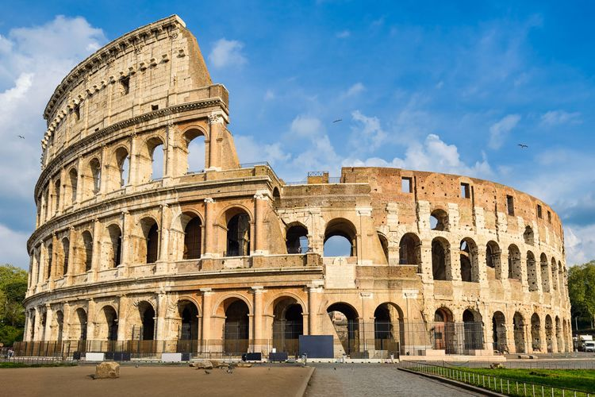

Detail Tempat Wisata
Gunung Lawu
Gunung yang indah dan penuh dengan legenda ini terletak di Propinsi Jawa Timur, dengan ketinggian sekitar 3265 diatas permukaan laut.
Harga paket perjalanan wisata : $500.000 (3H2M)
Hawaii
Kepulauan hawaai merupakan pulau yang indah dengan pantai-pantai yang eksotis. Dengan tarian yang khas, dan keramah-tamahan penduduknya.
Harga paket perjalanan wisata : $500.000 (3H2M)
Colloseum

Tempat pertunjukan yang besar berbentuk elips yang disebut amfiteater atau dengan nama aslinya Flavian Amphitheatre, yang termasuk salah satu dari Enam Puluh Sembilan Keajaiban Dunia Pertengahan.
Harga paket perjalanan wisata : $500.000 (3H2M)
Candi Borobudur
Candi Borobudur adalah sebuah candi Buddha yang terletak di Borobudur, Magelang, Jawa Tengah, Indonesia. Candi ini terletak kurang lebih 100 km di sebelah barat daya Semarang, 86 km di sebelah barat Surakarta, dan 40 km di sebelah barat laut Yogyakarta.
Harga paket perjalanan wisata : $500.000 (3H2M)